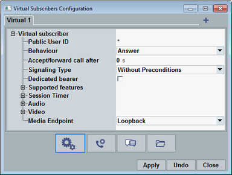

Common View Elements
This section describes the elements available in all virtual subscriber views, for example buttons for creating/deleting tabs and for switching between the views.

Virtual subscriber configuration dialog
 creates a tab / virtual subscriber. The maximum number of tabs is 20.
creates a tab / virtual subscriber. The maximum number of tabs is 20.
 deletes the currently selected tab. Tab 1 cannot be deleted.
deletes the currently selected tab. Tab 1 cannot be deleted.
To switch between the views of the dialog box, use the following buttons.
From left to right, they access the following views:
- Basic profile configuration, see "Basic Virtual Subscriber Settings"
- Mobile-terminating calls, see "Mobile-Terminating Calls"
- Mobile-terminating messages, see "Mobile-Terminating Messages"
- File transfer, see "File Transfer"
Switching the view applies changes of the old view. If you want to discard changes, press "Undo" before switching the view.
"Apply" applies all changes.
"Undo" discards all not yet applied changes.
"Close" closes the dialog box. Not yet applied changes are discarded.